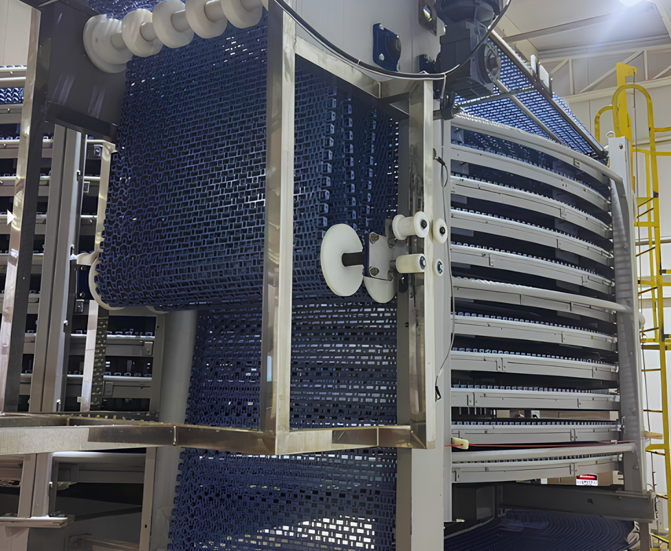

Projetos que Contam Histórias
Retrofit Completo

Projeto Intralox – Cooler: Retrofit Completo
Realizamos um retrofit completo no equipamento, incluindo a
substituição das guias em inox tipo “U”...
Sistema de Tração

Projeto: Manutenção Completa do Sistema de Tração
Serviço executado com foco em desempenho e confiabilidade
operacional...
Armazenador de Formas

Projeto: Limpeza, lubrificação e revisão do Armazenador de
Formas
Realizamos a limpeza, lubrificação e revisão completa do
Armazenador de Formas...
Limpadora de Formas

Projeto: Limpadora de Formas
Projetada para garantir eficiência e higiene no processo
produtivo...
Carimbador de Pães
Projeto: Carimbador de Pães
Desenvolvemos um equipamento exclusivo para a estampagem de pães, utilizando a tecnologia de...
Juntos, conquistamos resultados reais.

Retrofit Completo
Projeto Intralox – Cooler: Retrofit Completo
Realizamos um retrofit completo no equipamento, incluindo a
substituição das guias em inox tipo “U” de apoio da esteira no
tambor, a preparação e instalação de peças de apoio em UHMW, a
instalação de guia central para alinhamento da esteira, além da
fabricação e instalação do sistema take-up com contrapeso duplo e do
sistema hold-down. Todo o processo foi executado em conformidade com
o projeto desenvolvido pela Intralox, empresa reconhecida
mundialmente como referência em soluções para esteiras
transportadoras, que acompanhou de perto cada etapa do serviço. Para
finalizar, o equipamento recebeu pintura completa, assegurando maior
durabilidade, eficiência e confiabilidade operacional.

Manutenção Sistema de Tração
Projeto: Manutenção Completa do Sistema de Tração
Serviço executado com foco em desempenho e confiabilidade
operacional. As intervenções incluíram a substituição integral das
curvas internas e externas, troca da corrente de arraste e revisão
completa do conjunto de tração, com substituição dos rolamentos.
Além disso, foi realizada a revisão e correção dos grids,
restabelecendo as condições ideais de funcionamento e prolongando a
vida útil do equipamento.
Limpadora de Formas
Projeto: Limpadora de Formas
Projetada para garantir eficiência e higiene no processo produtivo,
esta máquina realiza a limpeza das formas no sentido vertical,
utilizando escovas rotativas atóxicas que asseguram a remoção
completa de resíduos sem comprometer a integridade do material. O
resíduo do produto é direcionado para um compartimento exclusivo de
descarte, garantindo organização e segurança no ambiente de
trabalho.
Grupo Bimbo
Há mais de 9 anos desenvolvendo grandes projetos, com atuação contínua nas unidades de Mogi das Cruzes (SP), São Paulo (Matriz) e Jaboatão dos Guararapes (PE), garantindo presença sólida e confiável junto aos nossos clientes.